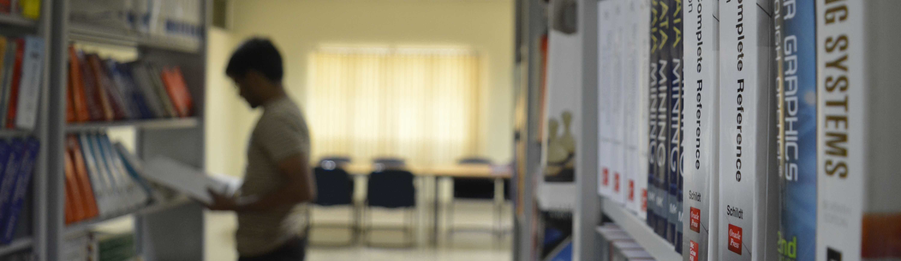

Student Accommodation

There is a Boys’ hostel which can accommodate 680 students and a Girls’ hostel which can accommodate 170 students. Students will either be in a double room with toilet facilities shared among 8 double rooms, or in smaller double rooms with a double-decker bed, but with an attached bathroom. Each hostel has a common Dining Space, Recreation room and manned with 24x7 security and backed with 24-hour power backup supply, lift-service and high-speed internet connection.
Campus-Network

The IIITG library is stocked with a good number of books and online journals to cater to the needs of the students, research scholars and faculty members of IIITG. The Library currently has 1,214 printed volume of Books and subscribes to the IEEE, ACM and JSTOR e-journal packages through which the users can get access to 218 journals (approx.) and 3698 conference proceedings (approx.). Users can access these online resources in their electronic devices i.e. laptops, tablets etc. since the library is Wi-Fi enabled. The library has a spacious and well-lit reading room. It fosters an atmosphere for academic learning and ensures a decorum of discipline, so that the students can concentrate their entire focus on learning.
Labs are of immense importance to study core engineering subjects like computer science or electronics and communication. At IIITG, the labs are well equipped with state-of-the art equipment and latest hi-tech gadgets. The lab assistants are experienced and guide the students with competence through both curriculum and research work. Our labs foster an atmosphere of independent research under the guidance of instructors. Further, students are allowed to perform experiments individually or in a group of two.
| Lab Facilities | ||||||
| LAB | Subjects/ Subject code | Semester | Instruments/Equipments | Software | ||
| Electronics Lab | Basic Electronics Lab (EC111) | 1st Sem | Two channel 100 Mhz DSO(Model: TBS 1102; Make: Tektronix), 20MHz single Channel AFG (Model: AFG2021; Make: Tektronix),Triple output Regutated DC Power Supply (Model: PSD3304, Make: Scientific), True RMS Hand Held Digital Multimeter (Model: Rish Multi 18S, Make: Rishab) and 8085 Development board (for 8085 microprocessor experiments) | N/A | ||
| Digital Design Lab (EC102) | 2nd Sem | |||||
| Analog Circuits Lab (EC202) | 3rd Sem | |||||
| Analog Integrated Circuit Lab (EC302) | 5th Sem | |||||
| Signal Processing Lab | Signals and System Lab (EC242) | 3rd Sem | Texas Instrument DSK6713(TMS3206713) DSP development board (For DSP Lab) | Mathworks MATLAB (for S&S, DSP) and Code Composer Studio( for DSP) | ||
| Mathworks MATLAB (for S&S, DSP) and Code Composer Studio( for DSP) | 4th Sem | |||||
| Communication Lab | Communications Lab (EC252) | 4th Sem | Two channel 100 Mhz DSO with upgradability to MDO, LXI enabled and builtin Spectrum analyzer(Model: MDO 3012; Make: Tektronix), Two Channel AFG LXI enabled (Model: AFG 3022C; Make: Tektronix), Triple Output DC regulated power supply (Model: PSD3304, Make: Scientific), True RMS Hand Held Digital Multimeter, (Model: Rish Multi 18S, Make: Rishab),NI USRP 2932 400 MHZ to 4.4 GHZ SDR with GPS Clock, Universal Software radio Peripharials NI USRP 2920 | Mathworks MATLAB and NI LabView software | ||
| Digital Communication Lab (EC352) | 5th Sem | |||||
| Microwave Engineering Lab | Microwave Engineering Lab (EC372) | 6th Sem | Gunn Based X-Band Microwave Test Bench, Klystron Based X-Band Microwave Test Bench, Waveguide Components( Gunn and Klystron), Automated X-Band Antenna Trainer Kit , USB Power Sensor | Ansys Academic Research HF package(HFSS, Ansys Designer etc) | ||
| Embedded Systems Lab | Embedded Systems Lab (EC382) | 6th Sem | Keil MCBSTM32F200-ED ARM Cortex - M3 processor DEVELOPMENT BOARD, Keil ULINK2-ED JTAG/USB Adapter cum debugger, Intel Galileo Gen-2 board, 8085 Development board | Keil Microvision 4 (Student version), ARDUINO IDE(OpenSource) | ||
| Robotics Lab | Project Work | --- | FireBird V 2560 , Spark V Robot , FireBird V P89V51RD2, Adapter Card, FireBird V P89V51RD2, Adapter Card, Zigbee Modules 100m Range, Zigbee Modules Adpater , Metal Gear ServoMotor, servo Motor Gripper Kit For The FireBird V Robot, Sharp GP2Y0A21YK0F Infrared sensor Range(10cm to 8cm), etc. | |||